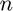

Assignment 3 Part 1 - Andrew Pauls
A constant voltage of 0.5 V was applied over the length of the semiconductor in the x direction (L) and the electric field (E) can be calculated by:
For a distance of 200 nm the electric field was calculated to be 0.5 mV/nm or 500000 V/m.
The force on each electron can be calculated by multiplying the charge of an electron (q) by the electric field in which the electron is present.

With an electron charge of 1.602 x the force on the each electron was found to be 8.01 x  N.
N.
The acceleration of the electrons is calcaulted by dividing the force on the electrons by the effective mass of the electrons which is 0.26 x 9.11 x kg.

The acceleration is calcualted to be 3.3817 x .
The formula for electron drift current density is given be the following formula:
Where is the drift current density, is the charge of an electron,  is the electron concentration (per )and is the average drift velocity.
%list of constants m0 = 9.11e-31; mn = 0.26*m0; kB = 1.38e-23; T = 300; q = 1.602e-19; n = 10^15; %region limits xlim = 200e-9; ylim = 100e-9; %assignment 3 calcualtions voltage = 0.1; E = voltage/xlim; F = E*q; acc = F/mn; %thermal velocity vth = sqrt(2*kB*T/mn); %initialize the number of electrons num_electrons = 5; %defining array for electrons (x postion, y position, angle, velocity) electron = zeros(num_electrons, 6); % the previous position of the electron (previous x position, previous y % position) electron_prev = zeros(num_electrons, 2); %spacial step should be smaller than 1/100 of region size time_step = xlim/vth/100; time_total = time_step*500; %num_step = time_total/time_step; % used to make each electron a different colour electron_colour = hsv(num_electrons); % counter used to check temperature is constant count = 0; % scattering probability Pscat = 1-exp(-time_step/0.2e-12); %set an initial random postion and a fixed velocity for each electron for i=1:num_electrons for j=1:6 if(j==1) electron(i,j) = xlim*rand(); elseif(j==2) electron(i,j) = ylim*rand(); elseif(j==3) electron(i,j) = 2*pi*rand(); elseif(j==4) electron(i,j) = randn()*vth; % set vx value elseif(j==5) electron(i,j) = electron(i,4)*cos(electron(i,3)); % set vy value else electron(i,j) = electron(i,4)*sin(electron(i,3)); end end end figure(3) hist(electron(:,4)) title('Velocity Distribution') % define a temperature and time array for plotting temperature= zeros(time_total/time_step,1); time = zeros(time_total/time_step,1); % counter for mean collision time collision_count = 0; running_time = 0; % velocity array used to calculated mean free path velocity = zeros(time_total/time_step,1); % update each electrons positon for each time step for k=0:time_step:time_total avg_temp = 0; avg_velocity = 0; for m=1:num_electrons % allows electrons to pass through to the other side of the region %in the x-direction if (electron(m,1) >= xlim) electron(m,1) = 0; electron_prev(m,1) = 0; elseif (electron(m,1) <= 0) electron(m,1) = xlim; electron_prev(m,1) = xlim; end % electrons are reflected at the same angle if they strike the limits % of the region in the y-driection if ((electron(m,2) >= ylim) || (electron(m,2) <= 0)) %electron(m,3) = pi - electron(m,3); %electron(m,4) = -electron(m,4); electron(m,6) = -electron(m,6); end % see if the particle scatters or not if(Pscat > rand()) % scatters at a random angle electron(m,3) = 2*pi*rand(); % new velocity for scattering - gaussian with some % MAXWELL-BOLTZMAN standard deviation vx_new = randn()*vth; vy_new = randn()*vth; v_new = sqrt(vx_new^2+vy_new^2); electron(m,4) = v_new; electron(m,5) = cos(electron(m,3))*v_new; electron(m,5) = sin(electron(m,3))*v_new; collision_count =+ 1; end avg_temp = avg_temp + (electron(m,4)^2)*mn/(2*kB); avg_velocity = avg_velocity + electron(m,4); %plot the movement of each electron if(k~=0) figure(1) plot([electron_prev(m,1),electron(m,1)],[electron_prev(m,2),electron(m,2)],'color',electron_colour(m,:)) axis([0 xlim 0 ylim]); end end title('Electron movement: random scattering') xlabel('x-axis position (m)') ylabel('y-axis position (m)') hold on pause(0.001) % set the previous postion of the electron to the current electron %postion for the next itteration electron_prev(:,1) = electron(:,1); electron_prev(:,2) = electron(:,2); % set the electron postion to an updated position electron(:,1) = electron(:,1) + electron(:,5).*time_step; electron(:,2) = electron(:,2) + electron(:,6).*time_step; electron(:,5) = electron(:,5) + acc*time_step; count = count +1; temperature(count,1) = avg_temp/num_electrons; time(count,1) = k + time_step; velocity(count,1) = avg_velocity; end mean_collision = time_total/collision_count; avg_vth = 0; for n=1:500 avg_vth =+ velocity(n,1); end avg_vth = avg_vth/size(velocity,1); MFP = avg_vth*mean_collision; figure(2) plot(time,temperature) axis([0 time_total, 0 1100]) title('Temperature of electrons over time') xlabel('time (s)') ylabel('Temperature (K)')